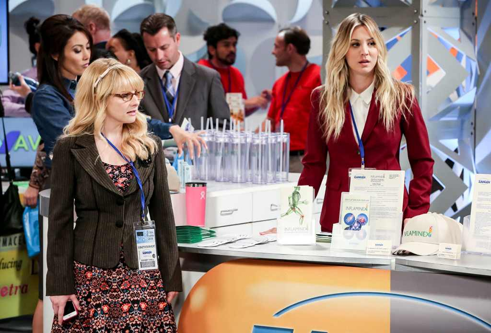

Sheldon Cooper...as a father?
Tonight's Big Bang Theory gave us a glimpse of what that could look like as Amy concocted a ploy to convince her husband that kids could be fun. For Sheldon, fun meant science experiments, which he had a great time turning Howard and Bernadette's kids into while Penny and Bernadette headed out of town for a conference.
The idea of Sheldon having kids is somewhat alarming, especially when he's only excited because he can do experiments on their behavior patterns, but at least we could be somewhat comforted by the fact that Leonard's mother has been experimenting on him his entire life and he turned out well enough. Ish.
Of course, Amy's plan may have backfired on her as Sheldon is now envisioning "either five sets of triplets or three sets of quintuplets," or any number divisible by three, because that's just a drop in a bucket if you're a frog.
The Big Bang Theory invited the TV Critics Association to the set for the run through of tonight's episode last month, the first time press had been invited to the portion of production where the actors ran through the entire script on the set without cameras or the studio audience.
Unfortunately, it just so happened to be an episode with only one scene that took place in the main set, so it ended up being a bit of a strange experience for the press who were there, seated where the normal audience sits, right in front of Leonard and Penny's apartment, the elevator bay, and what used to be Penny's apartment. Tonight's episode primarily took place in Howard and Bernadette's house, which was at one end of the set, and Penny and Bernadette's pharmaceutical conference, which was all the way at the other end.
What resulted was a little bit of extra comedy as, after every scene, the entire crew and most of the cast would shuffle from one end of the set to the other, some occasionally looking up at us as if to say "I'm so sorry."
We could only barely hear Sheldon's baby experiments or Penny's strides in her job with Bernadette, but it ended up feeling strangely metaphorical. As the show is about to end, that living room that was once the center of the show's world is becoming less and less important. Everybody's getting married, having kids, starting new careers, and making less time for arguing about takeout and movies and spots on the couch.
Still, we wouldn't be shocked if that's exactly how the show will end, with the entire gang eating Chinese takeout in the living room. And no, we're not crying, you're crying!
The Big Bang Theory airs Thursdays at 8 p.m. on CBS.